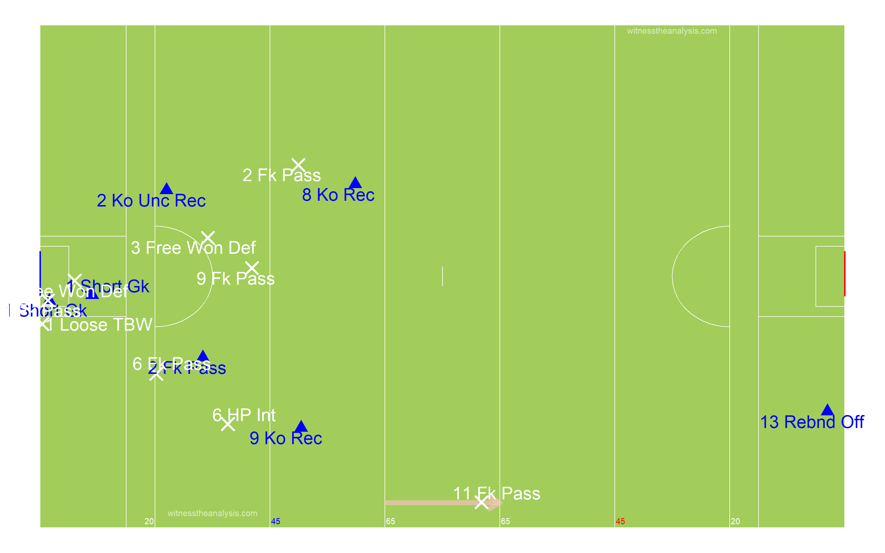
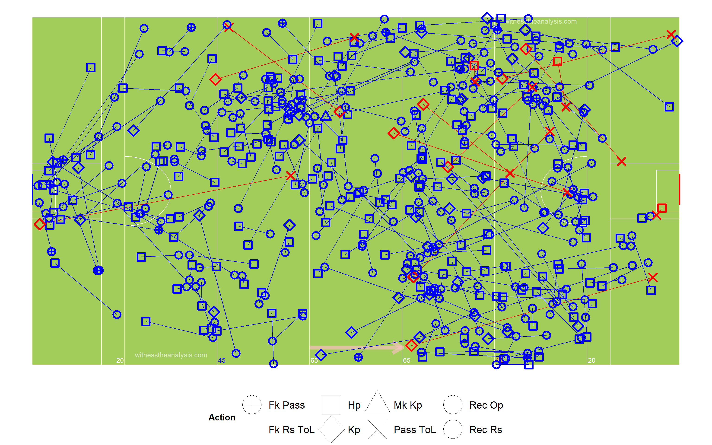

Mayo (3.11) vs Kerry (2.10)
National League Final
Croke Park
31/03/2019
#Summary
| Mayo.3.11 | Kerry.2.10 |
|---|---|
| O’Connor (1-2) | O’Shea (0-5 fk) |
| Ruane (1-1) | Crowley (1-1) |
| Treacy (1-0) | O’Brien (1-0) |
| Boland (0-2) | Clifford (0-2) |
| Carr (0-2) | Barry (0-1) |
| Doherty (0-2,0-1 fk) | Geaney (0-1) |
| Durcan (0-1) | |
| Coen (0-1) |
| Team | Poss | Phase | All.Shots | All.Scores | Shots.PerPoss | Scores.PP | Shots.Op | Scores.Op | Score.Eff.. | Op.Scores.PP |
|---|---|---|---|---|---|---|---|---|---|---|
| Mayo | 57 | 80 | 37 | 14 | 65% | 25% | 31 | 13 | 42% | 23% |
| Kerry | 56 | 80 | 22 | 12 | 39% | 21% | 15 | 7 | 47% | 13% |
| Ko | Ko Won | Ko % | To Won | Frees For | Fk Scoreable | Score | Fk Score% | Pass Op | Hp Op | Kp Op |
| 17 | 14 | 82% | 36 | 16 | 3 | 1 | 33% | 251 | 199 | 52 |
| 21 | 14 | 67% | 33 | 28 | 6 | 5 | 83% | 191 | 150 | 41 |
#Starting Line Up
##Mayo
##Kerry
#Scoring Timeline
#Score Differential
#Average Position by Possession
##Mayo
##Kerry
#Areas of Play by Possession
##Mayo
##Kerry
#Path of Possession
##Mayo
##Kerry

#All Shots Origin by Possession
##Mayo (Blue = Score)
##Kerry (Blue = Score)
#Open Play Shot Origin by Phase
##Mayo (Blue = Score)
##Kerry (Blue = Score)

#Open Play Shots - Location & Outcome
##Mayo
##Kerry
#All Shots - Location & Outcome
##Mayo
##Kerry
#Kick Outs
##Mayo
##Kerry

#Turn overs/Possession Won
##Mayo

##Kerry
#Frees Won
##Mayo
##Kerry
#Frees Loss
##Mayo
##Kerry
#Passing
##All Passes - Mayo

##All Passes - Kerry
#Passes into 45
##Mayo
##Kerry
#Passes Inside Opp 65
##Mayo
##Kerry
#Pass Network
##Mayo
###In Degree (Number of Players a Player Received a Pass from)
## Durcan Boland Keegan Ruane O Connor Higgins Doherty Carr A O Shea Moran Harrison Vaughan Coen McLoughlan Hennelly
## 14 13 12 12 11 10 10 10 8 6 5 5 5 4 3
## Barrett Boyle Regan Treacy
## 2 1 1 1###Out Degree (Number of Players a Player Made a Pass to)
## Keegan Durcan Higgins Ruane Boland O Connor A O Shea Hennelly Carr Moran Coen Doherty Barrett Harrison McLoughlan
## 14 12 11 11 11 11 9 8 8 8 7 6 5 4 3
## Vaughan Boyle Regan Treacy
## 2 2 1 0###Strength in (Number of Passes Received by a Player)
## Keegan Durcan Ruane Boland A O Shea O Connor Higgins Carr Doherty Coen Moran McLoughlan Harrison Vaughan Hennelly
## 34 27 27 23 21 19 16 13 12 9 9 6 5 5 3
## Barrett Boyle Regan Treacy
## 3 1 1 1###Strength Out (Number of Passes/Shots Made by a Player)
## Keegan Ruane Durcan A O Shea Higgins O Connor Boland Hennelly Carr Coen Moran Doherty Harrison Barrett McLoughlan
## 37 28 23 23 22 17 16 12 12 9 9 7 6 5 4
## Vaughan Boyle Regan Treacy
## 2 2 1 0###Betweenness Centrality (Flow of Passes through a Player)
## Moran Keegan Higgins Boland Durcan O Connor Ruane Carr Doherty A O Shea Hennelly Harrison Barrett
## 0.1133165182 0.0978203820 0.0939658125 0.0881925371 0.0796373177 0.0436880412 0.0332610979 0.0245507814 0.0134717604 0.0112437970 0.0044245451 0.0036346967 0.0003844675
## McLoughlan Vaughan Coen Boyle Regan Treacy
## 0.0002513826 0.0000000000 0.0000000000 0.0000000000 0.0000000000 0.0000000000###Closeness Centrality (How Well connected and central a Player is within the Teams Network)
## Keegan Higgins Durcan Boland O Connor Ruane Carr A O Shea Doherty Moran Hennelly Harrison Coen Barrett McLoughlan
## 0.9000000 0.8181818 0.8181818 0.8181818 0.8181818 0.7826087 0.7500000 0.6923077 0.6923077 0.6666667 0.6428571 0.6428571 0.6000000 0.5806452 0.5806452
## Vaughan Boyle Regan Treacy
## 0.5625000 0.5294118 0.5000000 0.4090909###Entropy (The Unpredictability in who a Player Passes to/Takes shot)
## A O Shea Higgins Keegan Durcan Boland O Connor Ruane Harrison Hennelly Coen McLoughlan Carr Moran Barrett Doherty
## 0.9143289 0.9295931 0.9314130 0.9372598 0.9379844 0.9405651 0.9457702 0.9549655 0.9606293 0.9655108 0.9695704 0.9721184 0.9784957 0.9795698 0.9830345
## Vaughan Boyle Regan
## 1.0000000 1.0000000 1.0000000###Global clustering coefficient (Groups of Players who pass to each other)
## [1] 0.6905286###eigen_centrality (How well connected the well connected are)
## Keegan Ruane A O Shea Durcan Higgins Boland O Connor Carr Coen Doherty Moran Hennelly McLoughlan Harrison
## 1.000000000 0.825715962 0.773260730 0.753814142 0.584182931 0.583709225 0.576272550 0.372769071 0.336993965 0.293161113 0.270942424 0.249804809 0.169107028 0.161724263
## Vaughan Barrett Boyle Regan Treacy
## 0.127722408 0.127654401 0.059065564 0.029504831 0.006844905##Kerry
###In Degree (Number of Players a Player Received a Pass from)
## O’Donoghue Barry Sherwood O Connor Walsh McCarthy T O Sullivan O Shea O Brien Clifford Ryan G Crowley Griffin
## 11 10 9 8 8 8 7 7 7 7 6 6 6
## P Crowley G O Sullivan Murphy Moynihan Foley Geaney O’Brien
## 5 4 3 3 3 3 0###Out Degree (Number of Players a Player Made a Pass to)
## O Connor Barry T O Sullivan P Crowley Ryan O Shea Clifford O’Donoghue G O Sullivan O Brien McCarthy Sherwood Murphy
## 15 13 10 8 7 7 7 7 6 6 6 5 5
## Griffin Walsh Foley G Crowley Moynihan Geaney O’Brien
## 5 4 4 2 2 2 0###Strength in (Number of Passes Received by a Player)
## Barry O Connor O’Donoghue O Shea Clifford T O Sullivan Sherwood O Brien Walsh McCarthy Griffin P Crowley G O Sullivan
## 21 15 14 13 13 11 9 9 9 9 9 7 7
## G Crowley Ryan Murphy Foley Moynihan Geaney O’Brien
## 7 6 6 4 3 3 0###Strength Out (Number of Passes/Shots Made by a Player)
## Barry O Connor Ryan T O Sullivan P Crowley O Shea McCarthy O’Donoghue Murphy Clifford Griffin Sherwood G O Sullivan
## 21 20 14 13 11 11 10 10 9 9 9 8 7
## Walsh O Brien Foley G Crowley Moynihan Geaney O’Brien
## 7 6 4 2 2 2 0###Betweenness Centrality (Flow of Passes through a Player)
## Barry O Connor O’Donoghue O Brien Sherwood T O Sullivan McCarthy Clifford Ryan G O Sullivan O Shea Walsh P Crowley
## 0.1103365121 0.0903984904 0.0407956079 0.0388305165 0.0335975915 0.0300375226 0.0267696241 0.0213389113 0.0192670715 0.0152557319 0.0144663653 0.0110964734 0.0083662439
## G Crowley Griffin Foley Murphy Moynihan Geaney O’Brien
## 0.0074793465 0.0059261401 0.0053738334 0.0045821462 0.0007309942 0.0007309942 0.0000000000###Closeness Centrality (How Well connected and central a Player is within the Teams Network)
## Barry O Connor O’Donoghue Sherwood T O Sullivan O Brien Ryan McCarthy P Crowley G O Sullivan O Shea Clifford Murphy
## 0.4750000 0.4750000 0.4318182 0.4222222 0.4222222 0.4222222 0.4130435 0.4130435 0.4042553 0.4042553 0.4042553 0.4042553 0.3958333
## Walsh Foley Griffin G Crowley Moynihan Geaney O’Brien
## 0.3958333 0.3877551 0.3877551 0.3725490 0.3725490 0.3584906 0.0500000###Entropy (The Unpredictability in who a Player Passes to/Takes shot)
## Murphy Ryan Griffin G O Sullivan Clifford Walsh O Connor T O Sullivan P Crowley McCarthy O Shea Sherwood O’Donoghue
## 0.9299660 0.9415594 0.9563047 0.9578792 0.9622252 0.9631397 0.9632444 0.9636104 0.9654072 0.9670443 0.9688411 0.9692074 0.9720820
## Barry Foley G Crowley O Brien Moynihan Geaney
## 0.9761470 0.9795698 0.9825676 0.9837274 1.0000000 1.0000000###Global clustering coefficient (Groups of Players who pass to each other)
## [1] 0.5971223###eigen_centrality (How well connected the well connected are)
## Barry O Connor O Shea T O Sullivan O’Donoghue Griffin Clifford Ryan Walsh P Crowley McCarthy Sherwood Murphy
## 1.00000000 0.87190417 0.69139748 0.67030042 0.61640630 0.56373763 0.56370858 0.50177067 0.48661407 0.45355078 0.41592374 0.41073668 0.40048898
## O Brien G O Sullivan Foley G Crowley Geaney Moynihan O’Brien
## 0.34780828 0.30859053 0.19410340 0.18481099 0.14399089 0.12930479 0.03991079#Total Posessions per Player
##Mayo
##Kerry
##Posessions Per Playing Time
##Open Play Shots vs Play Time
##Open Play Scores vs Play Time
##Open Play Shots vs Open Play Score